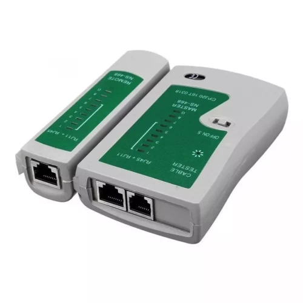

PEMBUATAN
DAFTAR LIST
FORMAT TABEL
PADA HALAMAN WEB
| data baris 1 kolom 1 | data baris 1 kolom 2 |
| data baris 2 kolom 1 | data baris 2 kolom 2 |
| data baris 3 kolom 1 | data baris 3 kolom 2 |
| data baris 1 kolom 1 | data baris 2 kolom 2 | ||||
| data baris 2 kolom 1 |
|
| Benua | Negara | |
|---|---|---|
| Asia | Indonesia | |
| Malaysia | ||
| Singapura | ||
| Thailand | ||
MULTIMEDIA
PADA HALAMANWEB
Menyajikan format tampilan gambar
LAN TERSTER

Gimana kalau Bumi kita jadi tempat tinggal yang nyaman buat anak cucu kita? Pasti seru, kan? Tapi, sayangnya, Bumi kita lagi sakit. Udara semakin kotor, sampah menumpuk dimana-mana, dan banyak hutan yang gundul. Padahal, Bumi ini satu-satunya rumah yang kita punya. Nah, buat ngebantu Bumi kita sembuh, kita bisa mulai dari hal-hal kecil, lho. Misalnya, rajin buang sampah pada tempatnya, hemat energi, dan ikut serta dalam kegiatan-kegiatan yang menjaga lingkungan. Selain itu, kita juga bisa mengajak teman dan keluarga untuk ikut peduli sama Bumi. Kalau kita semua ikut menjaga lingkungan, Bumi kita bakal jadi tempat yang lebih hijau, lebih sehat, dan lebih menyenangkan untuk ditinggali. Yuk, mulai dari sekarang!
Gimana kalau Bumi kita jadi tempat tinggal yang nyaman buat anak cucu kita? Pasti seru, kan? Tapi, sayangnya, Bumi kita lagi sakit. Udara semakin kotor, sampah menumpuk dimana-mana, dan banyak hutan yang gundul. Padahal, Bumi ini satu-satunya rumah yang kita punya. Nah, buat ngebantu Bumi kita sembuh, kita bisa mulai dari hal-hal kecil, lho. Misalnya, rajin buang sampah pada tempatnya, hemat energi, dan ikut serta dalam kegiatan-kegiatan yang menjaga lingkungan. Selain itu, kita juga bisa mengajak teman dan keluarga untuk ikut peduli sama Bumi. Kalau kita semua ikut menjaga lingkungan, Bumi kita bakal jadi tempat yang lebih hijau, lebih sehat, dan lebih menyenangkan untuk ditinggali. Yuk, mulai dari sekarang!
Gimana kalau Bumi kita jadi tempat tinggal yang nyaman buat anak cucu kita? Pasti seru, kan? Tapi, sayangnya, Bumi kita lagi sakit. Udara semakin kotor, sampah menumpuk dimana-mana, dan banyak hutan yang gundul. Padahal, Bumi ini satu-satunya rumah yang kita punya. Nah, buat ngebantu Bumi kita sembuh, kita bisa mulai dari hal-hal kecil, lho. Misalnya, rajin buang sampah pada tempatnya, hemat energi, dan ikut serta dalam kegiatan-kegiatan yang menjaga lingkungan. Selain itu, kita juga bisa mengajak teman dan keluarga untuk ikut peduli sama Bumi. Kalau kita semua ikut menjaga lingkungan, Bumi kita bakal jadi tempat yang lebih hijau, lebih sehat, dan lebih menyenangkan untuk ditinggali. Yuk, mulai dari sekarang!
Gimana kalau Bumi kita jadi tempat tinggal yang nyaman buat anak cucu kita? Pasti seru, kan? Tapi, sayangnya, Bumi kita lagi sakit. Udara semakin kotor, sampah menumpuk dimana-mana, dan banyak hutan yang gundul. Padahal, Bumi ini satu-satunya rumah yang kita punya. Nah, buat ngebantu Bumi kita sembuh, kita bisa mulai dari hal-hal kecil, lho. Misalnya, rajin buang sampah pada tempatnya, hemat energi, dan ikut serta dalam kegiatan-kegiatan yang menjaga lingkungan. Selain itu, kita juga bisa mengajak teman dan keluarga untuk ikut peduli sama Bumi. Kalau kita semua ikut menjaga lingkungan, Bumi kita bakal jadi tempat yang lebih hijau, lebih sehat, dan lebih menyenangkan untuk ditinggali. Yuk, mulai dari sekarang!